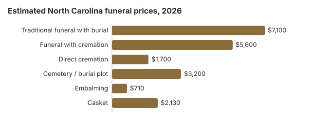

Funeral Costs in North Carolina
North Carolina families pay about $7,100 for a traditional funeral with burial on our estimates, about $5,600 for a funeral with cremation, and from about $1,700 for direct cremation. A cemetery plot adds roughly $3,200. North Carolina does not require a funeral director for most steps, and death certificates come from the county Register of Deeds, often the same day. Item prices, state rules and sources of help follow.
What Each Part of a North Carolina Funeral Costs
Below are our estimated North Carolina prices for each type of service and the main line items. The NC Board of Funeral Service licenses every home in the state but leaves pricing to each business, so two homes in the same county can quote very different totals.
| Item or service | Our NC estimate | Typical spread |
|---|---|---|
| Traditional funeral with burial | $7,100 | $5,325 – $9,230 |
| Funeral with cremation | $5,600 | $4,480 – $7,280 |
| Direct cremation | $1,700 | $1,190 – $2,380 |
| Cemetery / burial plot | $3,200 | $1,600 – $6,400 |
| Embalming | $710 | $500 – $1,500 |
| Casket | $2,130 | $710 – $5,680 |
Methodology note: The North Carolina numbers here are our estimates, not prices gathered from North Carolina funeral homes, and should not be read as a quote or professional advice. Our method is explained under how we calculate them, and its limits in the full disclaimer.
State sources: board; N.C. Gen. Stat. § 130A-415.

Line Items Worth Challenging on an NC Bill
When a North Carolina bill comes in higher than expected, it is usually because of the same short list of extras.
- North Carolina rarely requires embalming, whatever a price list implies; ask for refrigeration instead.
North Carolina Cremation and Burial Compared
Cremation
- Lowest-cost route: direct cremation at about $1,700
- With a viewing or service first: around $5,600
- Ashes can be kept, scattered or buried, so no plot is needed
- A memorial can be held weeks later, wherever the family likes
- Chosen by 48% of North Carolina families
Traditional Burial
- Funeral with viewing and burial: about $7,100 before cemetery costs
- A North Carolina plot adds roughly $3,200
- Most cemeteries ask for a vault or grave liner, though state law does not
- Gives the family a grave to visit
- A metal casket has a $2,500 national median in the NFDA 2023 General Price List Study; NC sellers price above and below it
Lower-Cost Choices in North Carolina (2026)
| Choice | Approximate NC cost | What you get |
|---|---|---|
| Direct cremation | $1,700 | No viewing or ceremony; state law makes the crematory wait 24 hours after death (N.C.G.S. 90-210.129, 130A-388). |
| Direct burial | $3,550 | A prompt burial with no embalming or viewing; the plot and grave opening are billed by the cemetery, not the funeral home. |
| Green burial | $3,905 | A green burial with no vault or embalming, available only at NC cemeteries that allow it. |
| Cremation + memorial | $5,600 | Cremation first, with a memorial gathering held separately |
| Traditional funeral | $7,100 | Viewing, funeral service and burial together |
What Pushes a North Carolina Bill Up or Down
North Carolina prices depend on where you are. Charlotte and Raleigh homes carry higher overhead and land costs than those in small towns, and metro and rural quotes in the state often differ by 10-30%. Southern funeral prices generally sit near or below the US median of $8,300, and how many homes compete in your county matters as much as anything else.
Cremation is less common here than nationally: 48% of North Carolina deaths, against the 63.4% national rate NFDA projected for 2025, a gap of 15.4 points. More families choosing burial means more spending on plots, vaults and caskets.
Your Rights When Buying a Funeral in North Carolina
Payment Assistance in North Carolina
- For an unclaimed North Carolina body, the cost of disposition is paid first from the estate and then by the county of residence (N.C. Gen. Stat. § 130A-415).
- Social Security pays a single $255 benefit, and only a surviving spouse or eligible child can claim it; in North Carolina, as elsewhere, the call is 1-800-772-1213 and the deadline is two years after the death.
- If the person who died was a veteran, whoever paid the funeral home can file VA Form 21P-530EZ. For a death not connected to service on or after October 1, 2026, the allowance is up to $1,032 for the burial itself and a further $1,032 for a plot. Our veteran burial benefits guide covers who qualifies.
- Our funeral payment assistance guide and how to pay for a funeral with no money explain Medicaid, charity and county help that North Carolina families can apply for.
Educational Resources
- Funeral Consumers AllianceIndependent nonprofit consumer advocacy for funeral rights
- FTC Funeral RuleThe federal rule protecting funeral consumers
- Funeral Insurance GuideCompare final expense and burial insurance options
- Best Burial Insurance CompaniesSide-by-side comparison of top burial insurance providers
- Payment Assistance GuideGovernment programs and financial help for funeral costs
- Insurance Plan ComparisonCompare coverage, premiums, and payout speed across providers
Compare Funeral Costs
- Average Funeral Cost in 2026National cost breakdown with real prices
- Cremation vs. Burial Cost ComparisonSide-by-side price comparison to help you decide
- Funeral Cost BreakdownEvery line item explained: know what you're paying for
- Cheapest Funeral OptionsLower-cost alternatives, with typical price ranges
- Direct Cremation: Most Affordable OptionNFDA 2023 median $2,645 with a family-supplied container (latest available)
- How to Compare Funeral PricesStep-by-step guide to getting the best price
How North Carolina Differs From Its South Neighbors
In a North Carolina summer, funeral homes tend to raise embalming early in the conversation. State law does not require it in most cases, and refrigeration does the same job while the family decides. If a home asks you to approve embalming quickly, ask whether that is the law or the home's own policy; the North Carolina Board of Funeral Service (919-733-9380) can tell you which rules actually apply.
Detailed North Carolina Cost Guides
Planning cremation or burial specifically? Each has its own North Carolina guide:
Cremation Costs in North Carolina
North Carolina cremation runs from about $1,700 for direct cremation to $5,600 with a service. The guide covers urns, where ashes may be scattered and memorial ideas, for a state where 48% of families now choose cremation.
Burial Costs in North Carolina
Our NC burial guide adds up the plot (about $3,200), casket, vault, headstone and grave opening, for a full burial total of $15,810 to $20,310.
North Carolina Funeral Costs by City
Prices shift from one North Carolina metro to the next. City guides:
Planning a Funeral in North Carolina: Where to Start
- First choose between cremation and burial: cremation in North Carolina or burial in North Carolina.
Death certificates and prepaid plans in North Carolina
North Carolina death certificates can be ordered from the county Register of Deeds where the death occurred, which can often issue certified copies the same day, or from NC Vital Records in Raleigh. The state charges $24 for a search that includes one certified copy and $15 for each additional copy ordered at the same time; ordering online through VitalChek adds a $13.95 processing fee, and expedited service is $15 more (NC Vital Records fees, checked October 29, 2026). Under N.C. Gen. Stat. § 130A-93.1, local offices keep $10 of the fee and may waive that portion for people 62 and older.
If the person who died bought a preneed funeral contract, North Carolina law protects most of the money. When a contract is funded by a trust, the preneed licensee must deposit the payments in an insured account in trust within five business days, and it may keep no more than 10% of the payments, and only if it disclosed that percentage in writing in advance; when it is funded by insurance, the funds must go to the policy within five business days (N.C. Gen. Stat. § 90-210.61). Find the contract before you meet the funeral home, so the home credits what was already paid.
- Ask the Register of Deeds in the county of death for copies; it is usually quicker than Raleigh.
- Look through the person's papers for a preneed contract or insurance policy naming a funeral home.
- Bring the contract to the arrangement meeting and ask for a written statement of what it covers.
Who oversees North Carolina funerals, and where to turn
The North Carolina Board of Funeral Service licenses funeral homes, and it is where complaints about pricing, misleading sales or a home that will not hand over its price list go: 919-733-9380. The board has existed since 1901, when the State Board of Health appointed its first members; today its members are appointed by the Governor and the General Assembly. Meetings are public, usually on the second Wednesday of the month at 1033 Wade Avenue in Raleigh, and are streamed live on YouTube, which makes it easy to see how complaints are handled.
For most of a funeral, using a funeral home is optional in North Carolina. The Funeral Consumers Alliance leaves the state off its list of nine states with funeral-director requirements, so families can buy only the services they want and handle the rest themselves.
Cremation has to wait 24 hours after death (N.C. Gen. Stat. §§ 90-210.129, 130A-388).
When no one can pay
If a body goes unclaimed and the Commission of Anatomy declines it, the county social services director arranges a prompt cremation, hydrolysis or burial. The estate pays first, and the county where the person lived covers the rest (N.C. Gen. Stat. § 130A-415). Social Security's one-time $255 death payment goes only to a qualifying spouse or child and is small against the $7,100 average North Carolina funeral in the table.
Veterans
The national cemetery taking burials in the state is Salisbury National Cemetery Annex (704-636-2661); the funeral home books the grave by calling the VA's National Cemetery Scheduling Office at 800-535-1117. North Carolina also runs four state veterans cemeteries that take requests directly: Coastal Carolina in Jacksonville (910-347-4550), Eastern Carolina in Goldsboro (919-648-0510), Sandhills in Spring Lake (919-664-1175) and Western Carolina in Black Mountain (828-669-0684).
A short checklist for North Carolina families
- Compare printed price lists from at least two North Carolina funeral homes, line by line.
- Decide early whether you want embalming and a viewing; leaving them out is often the biggest single saving.
- If the body may go unclaimed, call the county social services director before any funeral is arranged.
- Check for a preneed contract; § 90-210.61 means most of what was paid should still be in trust or in an insurance policy.
- For a veteran, compare Salisbury National Cemetery Annex or a state veterans cemetery with a private North Carolina plot.
- If a home will not stick to its printed prices, call the board at 919-733-9380.
Frequently Asked Questions
What does a North Carolina funeral typically cost?
Our estimate is about $7,100 for a funeral with burial and $5,600 for cremation with a service, but your own total depends on the home. Collect General Price Lists from a few Charlotte-area providers and compare them item by item.
How much can a North Carolina family save by choosing cremation?
At least $5,400. Direct cremation starts near $1,700, while a funeral with burial averages $7,100 before the plot or vault are added.
What protections do I have when arranging a funeral in North Carolina?
The FTC Funeral Rule gives you an itemized General Price List, prices over the phone, and the right to supply your own casket with no extra fee. North Carolina adds no requirement to use a funeral director for every step, according to the Funeral Consumers Alliance. Complaints go to the North Carolina Board of Funeral Service at 919-733-9380.
Where are the biggest savings on a North Carolina funeral?
Start with the price lists of a few Charlotte-area homes. Direct cremation, at about $1,700, is the least expensive choice anywhere in the state.
Is embalming required in North Carolina?
Usually not. Under the FTC Funeral Rule, a home may not claim the law requires embalming when it does not, and its price list has to say that embalming is not required except in certain special cases. If a home insists, ask it to put the rule it is relying on in writing.
How do North Carolina funeral prices compare with the national average?
Slightly lower. Our $7,100 traditional-funeral estimate sits under NFDA's $8,300 national median for a viewing-and-burial funeral, and our $5,600 cremation-with-service figure is under the $6,280 national median (NFDA, 2023). Homes in Charlotte and Raleigh can charge more than the state figure, so compare several lists.
What is the least expensive way to handle a death in North Carolina?
Direct cremation, from roughly $1,700. Direct burial at about $3,550 is next; it also skips the viewing, ceremony and embalming, but you still need a plot, which we estimate at $3,200 in North Carolina.
How do I find an affordable funeral home in North Carolina?
Ask three homes for their direct cremation and immediate burial prices; those packages leave out the extras, so they are the easiest lines to compare. Under the FTC Funeral Rule, a home must accept a casket or urn you bought online or from a retailer without charging a handling fee.